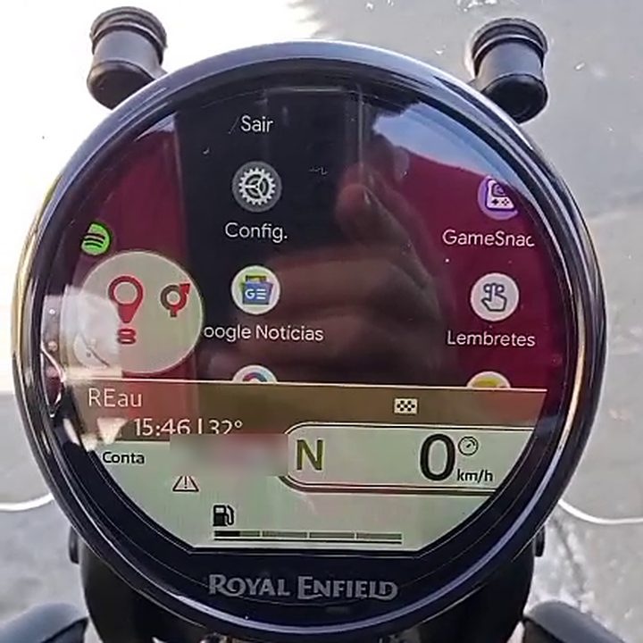

REau
Bring the Android Auto of your own phone to the round TFT dash (Tripper Dash) of your Royal Enfield. No cable, no head unit, and with the phone screen off.
⚠️ Personal, independent project, still in testing. Every rider installs and uses it at their own risk. Touch the phone only while the motorcycle is stopped.

How it works
REau presents itself to Android Auto as a car’s head unit, inside your own phone, using the head unit server that Android Auto offers in developer mode. It receives the video, crops and scales the picture for the dash’s screen and sends it over the dash’s Wi-Fi. REau does not draw a map or calculate a route: it repeats on the dash what the navigation app draws.
What it does
- Shows Android Auto on the dash, with adjustable fit (apps and apps menu).
- Sends the dash the maneuver, distance, arrival time and time left on the route.
- Also sends the song playing, calls and weather, for the dash’s cards.
- Uses the handlebar joystick to control Android Auto (map, menu, music, calls and Gemini).
- Speaks Portuguese and English, with a selector in Settings.
- Adjusts the video quality by the distance to the next maneuver and by speed.
- Optional: shows Android Auto in a browser on the local network, protected by a PIN.
Two editions
Lite is the recommended one: it does not use the Accessibility service. Full turns on the Android Auto server by itself and switches the apps menu’s crop, but asks for Accessibility.
| Lite (recommended) | Full | |
|---|---|---|
| Accessibility | Not used | Used |
| Android Auto server | You turn it on by hand every time | REau turns it on by itself |
| Banking apps | Not affected | Some may refuse to open |
| Install (Android 13+) | No special blocks | Play Protect and restricted settings |
Both can be installed together, but only one can be on at a time. Details in section 2 of the FAQ.
⚠️ Warning: the Full edition and banking apps. The Full edition uses Android’s Accessibility service. Some apps, mainly banking apps, treat third-party Accessibility as a risk and may refuse to open or to sign in, and there are reports of the block continuing even after uninstalling REau. If you use a banking app, use the Lite edition, which does not use Accessibility. If you already installed Full and an app refused to open, turn REau’s Accessibility off in Android’s settings and switch to Lite.
Requirements
- Android 10 or newer phone, with Android Auto installed and up to date.
- Android Auto developer mode on, with the head unit server (the guide explains how).
- A compatible dash (Tripper Dash) with its Wi-Fi in range; compatibility verified with firmware 13.10.
- On Android 13 or newer, the Full edition needs restricted settings allowed before Accessibility.
Privacy
No account, no ads, no data collection. What leaves the phone goes to the dash; the only trip to the internet is the weather, optional and off by default. See privacy and terms.
Free software
REau is free software under the GNU Affero General Public License v3.0. The source code, the changelog and the credits of the projects it uses are in the repository.